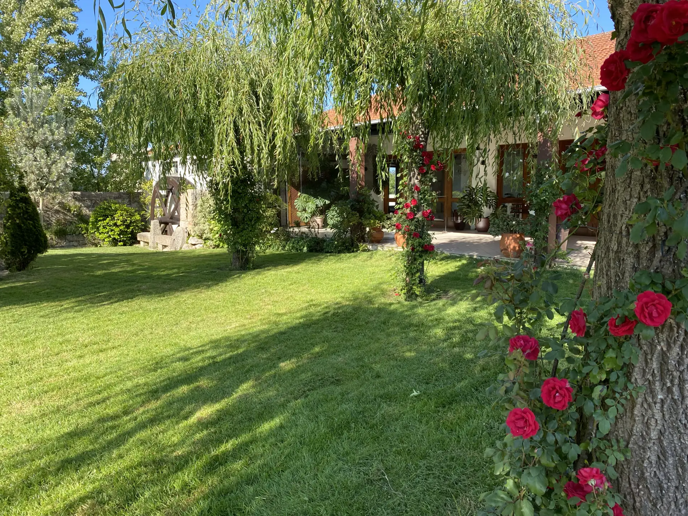

Quinta Casal Camaz
Aveleda · Vila do Conde
Casamentos, batizados, comunhões e outras celebrações.
Uma nova experiência está a chegar: estamos a preparar uma nova forma de dar a conhecer a quinta, com espaços renovados e ampliados, mantendo a natureza, a tradição familiar e as celebrações com significado que nos definem desde 1995. Entretanto, fale connosco diretamente.
Ver no mapa · Aveleda, Vila do Conde